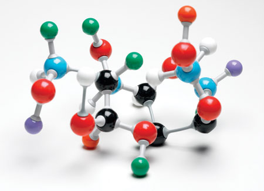
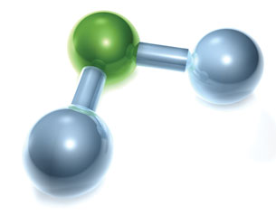

© 2007 Jupiterimages Corporation
Concepts, models, and theories are often used to interpret and explain observations and to predict future observations. This unit relates theories about bonding to the properties of matter and develops explanations and descriptions of structure and bonding through scientific models. You will learn about the diversity of matter by investigating ionic and molecular substances.

© Spectral-Design/shutterstock
This unit builds on concepts of matter, energy, and chemical change discussed in previous science courses. You will use graphing and measuring techniques learned in previous math courses as well. This unit will prepare you for several units in Chemistry 30, including thermochemical and electrochemical changes, and for when you begin to study organic chemistry.
The major outcomes for this unit are for you to be able to
describe the role of modelling, evidence, and theory when explaining the structure, bonding, and properties of ionic compounds
The overarching questions in this unit are
What is the role of modelling, evidence, and theory in explaining and understanding the structure and properties of molecular substances?
What is the role of modelling, evidence, and theory in explaining and understanding the structure and properties of ionic compounds?
Why do different substances have different melting and boiling points in addition to differences in other physical properties?
The major concepts developed in this unit are
the use of science and technology in society
the structure and properties of elements and ions
the structure and properties of ionic compounds and molecular compounds
chemical change and its relationship to the kinetic molecular theory
bonding theory and Lewis formulas
molecular shapes and VSEPR theory
molecular polarity and intermolecular forces